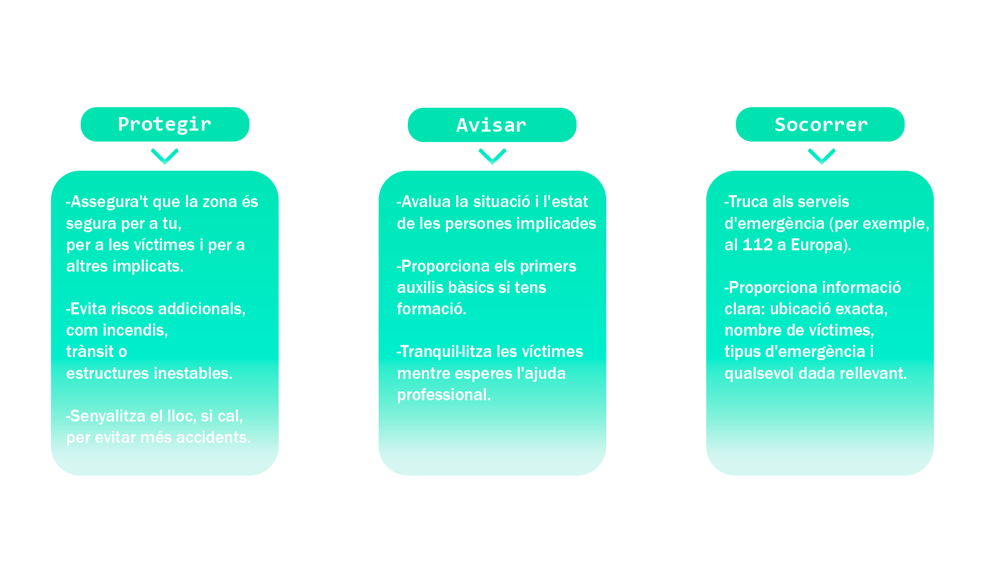
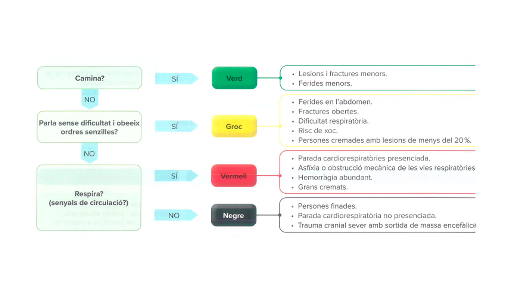
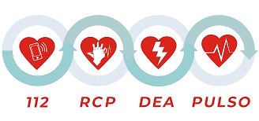

Els primers auxilis són les mesures que s'adopten inicialment, fins que es pot aconseguir assistència sanitària professional, en el mateix lloc dels fets, amb una persona accidentada o malalta de manera sobtada
"Protegir, Socórrer, Avisar" és una regla bàsica d'actuació en situacions d'emergència.
El triatge é sun procediment emprat per classificar les persones ferides quan n'hi ha un nombre indeterminat
El suport vital bàsic (SVB) integra tant mesures de prevenció de l'aturada cardiorespiratòria com les mesures de reanimació cardiopulmonar, en cas que aquetsa es produeixi,
Per salvar la vida de les persones que pateixen una aturada cardiorespiratòria cal seguir la cadena de supervivència
El suport vital bàsic es desenvolupa d'acord amb els passos de l'algorisme de les guies de l'any 2021 de l'ERC (European Resuscitaction Council)
El primer pas: comprovar el nivell de consciènciaPer fer-ho, ens col·loquem agenolats a l'altura de les espatlles de l'accidentat. Després, cal moure el ferit i preguntar-li si es conscient
1. Si no hi ha resposta es col·loca la víctima de sobines i s'obren les vies respiratories fent la maniobra de subjecció de la barbeta i elevació del mentó per dur a terme la maniobra front-mentó que es fa següint els seguents pasos:
2. El socorrista ha de comprovar si la persona respira observant si el tòrax es mou, escoltant si la persona respira i sentint si la persona respira.
Depenent de si la persona respira o no, el socorrista ha de seguir unes pautes diferents.
Les compressions toràciques es fan per mantenir la circulació de la sang quan el cor no batega. Per fer-les, el socorrista ha de seguir els passos següents:toràciques es fan per mantenir la circulació de la sang quan el cor no batega. Per fer-les, el socorrista ha de seguir els passos següents:
Nota: Desde la pandemia del covid no es recomenable fer les insuflasions per seguretat del rescatador es millor mantenir les compressions toràciques
El desfibril·lador extern automàtic (DEA) és un aparell que permet detectar i corregir les arrítmies cardíaques. Els passos a seguir per utilitzar-lo són els següents:
Les ennunegades no són un tipus d'accidents habituals, però poden ser greus i provocar la mort.
L’ennuegada és una obstrucció de les vies respiratòries que impedeix que l'aire arribi als pulmons, cosa que pot provocar la pèrdua de consciència per la falta d'oxigen.
Generalment, les ennuegades es relacionen amb menjar o amb altres cossos sòlids. Aquesta obstrucció de les vies respiratòries pot ser de dos tipus:
- Obstrucció incompleta o parcial: el cos estrany no tapa tota l’entrada d'aire i la persona pot continuar tossint com a mecanisme de defensa.
- Obstrucció completa o total: l’aire no entra ni surt de la boca, la persona no tus ni parla i es posa morada.
L’actuació davant una ennuegada varia en funció del tipus d’obstrucció.
Una vegada que la vida de la persona accidentada està fora de perill, cal comprovar altres lesions i proporcionar els primers auxilis que corresponguin.
Els accidents de treball poden generar hemorràgies per talls, atrapaments, amputacions, etc.
Una hemorràgia és qualsevol sortida de sang dels vasos sanguinis que la contenen.
Davant una hemorràgia, l’objectiu del socorrista és evitar la pèrdua de sang o l’empitjorament de l’estat de la persona accidentada. Les hemorràgies poden ser externes, internes o exterioritzades.
Les hemorràgies externes són aquelles en què veiem que la sang surt a través d’una ferida. Les més importants es produeixen en les extremitats, ja que són les parts del cos més exposades a traumatismes. Per aturar aquestes tipus d’hemorràgies, s’utilitzen 3 mètodes de manera consecutiva. Només es passarà al següent en cas que l’anterior tingui èxit.
Es tracta de la primera actuació quan es presenta una hemorràgia externa:
1. Pressionar en el punt de sagnat utilitzant un apòsit (gases, mocador...) tan net com es pugui durant un temps mínim de deu minuts.
2. Passats els deu minuts de compressió, alleujar la pressió. Mai s'ha de treure l'apòsit; si l'hemorragia
3. Si la ferida es localitza en una extremitat, cal elevar-la, si és possible, a una altura superior a la del cor de la persona accidentada.
Mètode 2. Compressió arterial1. Pressionar directament sobre l’artèria del braç (humeral) o de la cama (femoral) i aturar la circulació sanguínia en aquesta artèria i les seves ramificacions.
2. Mantenir la pressió fins l’arribada de l’assistència sanitària.
Mètode 3. Torniquet1. Aplicar en la base de l’extremitat afectada.
2. Utilitzar una banda ampla (5-10 cm).
3. Anotar l’hora exacta de l’aplicació.
4. Afluixar el torniquet. Mai ho ha de fer el socorrista, sinó personal sanitari.
B. Les hemorràgies internesEn les hemorràgies internes no surt sang a l’exterior, sinó que es queda a l’interior del cos.
Els seus símptomes són: pell freda, pàl·lidesa, mareig, tensió baixa i taquicàrdia. Sobre les hemorràgies internes no s’ha d’intervenir; només cal avisar urgentment els serveis d’emergència i col·locar de sobines, amb les cames aixecades, la persona accidentada. A més, hem de cobrir-la per evitar que perdi calor.
Són aquelles en què, tot i ser internes, la sang surt a l’exterior a través d’un orifici natural del cos: la boca, una orella, etc.
1. Col·locar la persona accidentada en posició lateral de seguretat (PLS), amb l’orella que sagna orientada cap al terra.
2. No intentar aturar l’hemorràgia.
Controlar els signes vitals i evacuar urgentment la víctima a un centre sanitari.
3. Controlar els signes vitals i evacuar urgentment la víctima a un centre sanitari.
De nas o epistaxi1. Pressionar directament sobre la paret nasal durant cinc minuts.
2. Inclinar el cap de la persona ferida cap endavant per evitar la possible inspiració de coàguls.
3. Al cap de cinc minuts, alleujar la pressió i comprovar si l’hemorràgia ha parat.
4. En cas contrari, introduir una gasa mullada en aigua oxigenada per la fossa nasal sagnant.
5. Si l’hemorràgia no s’atura, evacuar la víctima a un centre sanitari.
La primera actuació en cas de cremada consisteix a eliminar l'agent que l'hagi originada (apagar les flames de la persona accidentada, tallar el corrent, etc.).
Les cremades són lesions de la pell i altres teixits tous degudes al contacte amb el foc, el fred, l'electricitat, els productes químics, líquids bullents o el pas de l'electricitat pel cos.
La gravetat de les cremades depèn de la profunditat (Fig. 5.23) i de l'extensió. Com més extenses, més greus són.